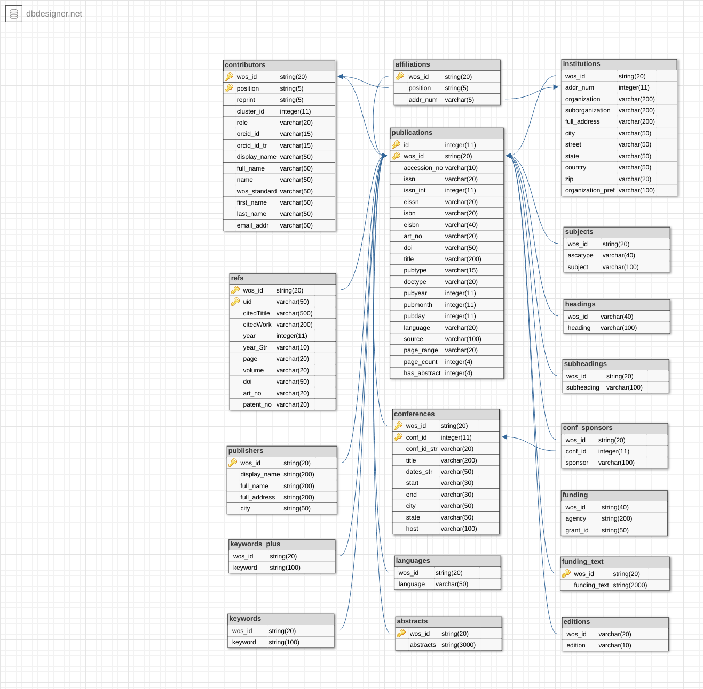

Web Of Science (WoS)¶
The Knowledge Lab has licensed the Thomson Reuters’ Web Of Science XML data for access to lab members as well as collaborators within the MetaKnowlege network. We maintain the raw XML data as well as a curated relational MySQL compatible database for different modes of analyses.
Here are some quick statistics about the wos2 database:
- The database contains publications from 1960 to 2015.
- The publications table contains 57M records.
- The references table contains 1.08B records.
Storage bucket¶
The data is currently stored on two systems. The raw xmls are on S3 :
- Complete dataset on S3 Storage : s3://klab-webofscience
- Sample dataset on S3 Storage : s3://klab-webofscience-sample
The parsed relational data is hosted on 2 RDS servers.
- AWS Mysql compatible database : wos.cluster-cvirc91pe37a.us-east-1.rds.amazonaws.com
- Updated MySQL database : wos2.cvirc91pe37a.us-east-1.rds.amazonaws.com
Schema¶
Tables: +—————+————+ | TABLE_NAME | TABLE_ROWS | +—————+————+ | abstracts | 26093439 | | affiliations | 213475189 | | conf_sponsors | 23712348 | | conferences | 8534597 | | contributors | 200128355 | | editions | 66042408 | | funding | 16379754 | | funding_text | 5784251 | | headings | 60241242 | | institutions | 64938861 | | keywords | 78155603 | | keywords_plus | 143232811 | | languages | 58572211 | | publications | 57136685 | | publishers | 50668193 | | refs | 1085738245 | | subheadings | 53973242 | | subjects | 130264559 | +—————+————+
The schema for the updates MySQL database :
Permissions¶
The data is secured within the Cloud Kotta secure data enclave and is only accessible from within the network. For access privileges please contact the Administrators for access.
Note
Even derivatives from this dataset could be considered sensitive. So users are adviced to confirm with the Administrators before publishing jobs that have derivatives in the output set.
Processed intermediates¶
None that are public.
Example¶
Here are some jobs that use the the Web of Science datasets: